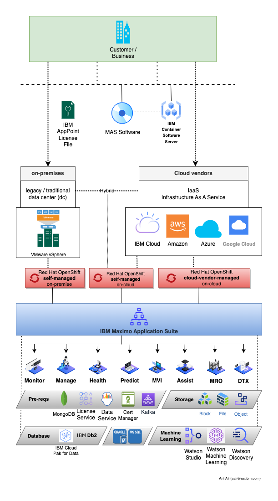

Getting Started
In this lab, you will learn how to provision the Maximo Application Suite core and all of its dependencies, as well as Maximo Manage and Maximo Monitor with a DB2 database on IBM Cloud's managed-hosted OpenShift cluster (aka ROKS). You could also provision Cloud Pak for Data for optionally dependent components such as Watson Machine Learning.
This lab will guide you through the process of creating a working instance of Maximo Application Suite using the officially available Ansible automation method. The lab includes all of the necessary Ansible variables in a handy script.
The Maximo Application Suite allows users to sign on to a single, integrated platform to access key monitoring, maintenance, and reliability applications across the business. Not only does it help remove data silos, it enhances data sharing with integrated user experience and shared administrative controls for enterprise-scale execution. https://www.ibm.com/products/maximo
Disclaimer and limitation
This deployment lab is only suitable for sandbox environments. A sandbox environment is typically used only for testing. Self-signed certificates with a default domain will be used in this lab. This lab is not intended for use in production-deployment scenarios. Only IBM Cloud ROKS Classic OpenShift and/or OpenShift with Data Foundation storage are supported by this lab. It may not work with all OpenShift flavors running on various other platforms.
Demonstration Video
Architecture
Here is a high level architecture (component diagram) of Maximo Application Suite:

Available Services
IBM Maximo Maximo Application Suite leverages the following IBM services that help you achieve the above business benefits:
Cloud Pak for Data
CP4D offers a wide selection of IBM and third-party services spanning the entire data lifecycle. Cloud Pak for Data
Watson Studio & Machine Learning
IBM Watson Studio empowers data scientists, developers and analysts to build, run and manage AI models, and optimize decisions anywhere on IBM Cloud Pak for Data. Watson Studio
You can learn more about setting up and using Watson Studio in this Lab
AMQ Kafka
The Red Hat AMQ streams component is a massively scalable, distributed, and high-performance data streaming platform based on the Apache Kafka project AMQ Streams